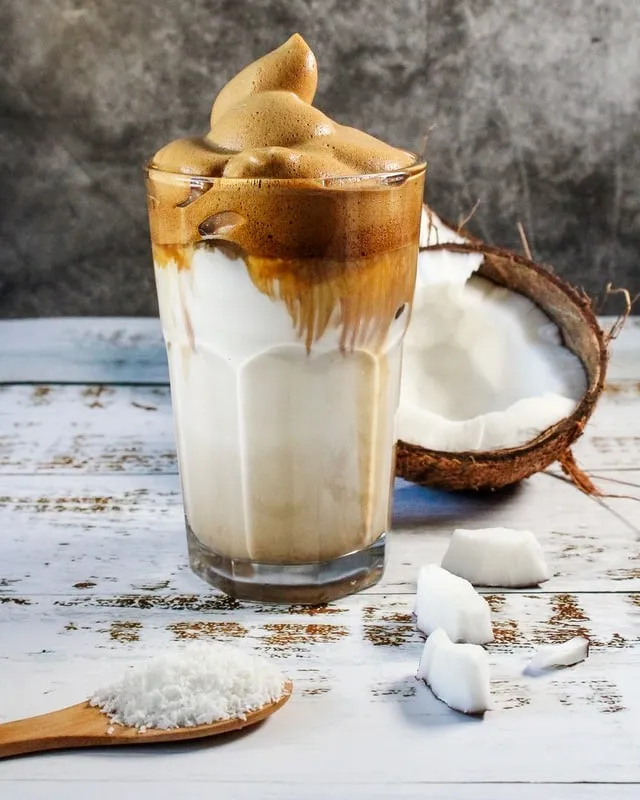

(189)
Sweet iced Coffee with Coconut Milk
SWEET ICED COFFEE WITH COCONUT MILK

TOTAL TIME
10 Minutes
LEVEL
10 Minutes
BADGET
Under $2
Sweet iced Coffee with coconut milk is easy to make and stores well in the fridge.
Make a large batch and save yourself a few trips to the coffee shop
INGREDIENTS
3 tablespoon Espresso coffee powder
1 cup of boil water
1 cup of Coconut milk
2 tablespoon Espresso coffee cream
INSTRUCTIONS
Boil some water and let sit for 1-2 minutes.
Put the coffee grounds into a cafetiere and pour in the water.
Let the coffee steep for 5 minutes then slowly press down the plunger on your Cafetiere.
Pour the coffee into a jug, allow to cool then chill for several hours.
Whisk in the coconut milk and condensed milk and serve over plenty of ice.
This coffee can be stored in the fridge for up to 5 days. Shake or stir again before serving.